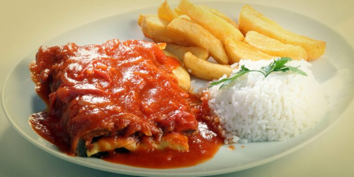

Bem-Vindo á nossa página dedicada a explorar uma variedade de pratos deliciosos e imagens apetitosas.Aqui você encontrará uma seleção de imagens representativas de comidas de diferentes tipos, cada uma acompanhada de um titulo, um subtitulo e uma breve descrição.Clique nas imagens para saber mais sobre cada prato e descobrir linka interessantes relacionados.
Essa receita de torta de frango de liquidificador é deliciosa e muito prática para o dia a dia. Além de ser perfeita para levar para a festa junina da família. Não é atoa, é uma das nossa campeãs de acessos. Por ser feita no liquidificador, a massa é líquida e a montagem é diferente de uma torta de frango tradicional.
Também conhecida como lasanha à bolonhesa, pela sua origem em Bolonha, na Itália, essa receita conquistou o mundo! Este prato é uma verdadeira celebração de sabores, com camadas intercaladas de massa, molho de carne moída e queijo derretido, resultando em uma combinação deliciosa e irresistível! Com ingredientes simples, como carne moída, molho de tomate, queijo, presunto e massa para lasanha, esta receita é uma opção prática e deliciosa para reunir a família ao redor da mesa.
Veja como fazer este rápido bife à parmegiana, de um jeito simples e descomplicado igual ao dos restaurantes para matar a vontade sempre! Sem gastar muito tempo.
A panqueca recheada que nós adoramos é uma criação francesa, e trata-se de uma massa fina frita em pouco óleo. Existem relatos de receitas equivalentes desde 9 mil anos atrás, você acredita? Por existir há tanto tempo, é possível encontrar uma grande variedade de receitas de panqueca diferentes: tem panqueca que vai ovo, que vai óleo, panqueca sem farinha, panqueca sem ovo e muito mais.

Seja para fazer no café da manhã ou no lanche da tarde, uma receita de pão de queijo fácil e delicioso com polvilho doce é sempre bem-vindo. Original de Minas Gerais e amado pelos brasileiros, esse pão de queijo leva polvilho doce no seu preparo, fazendo com que as bolinhas tenham uma massa elástica que estica como um queijo derretido! .